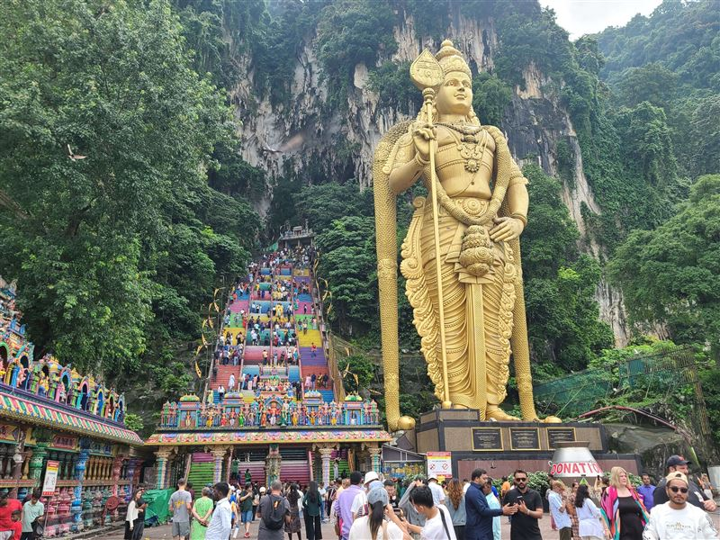
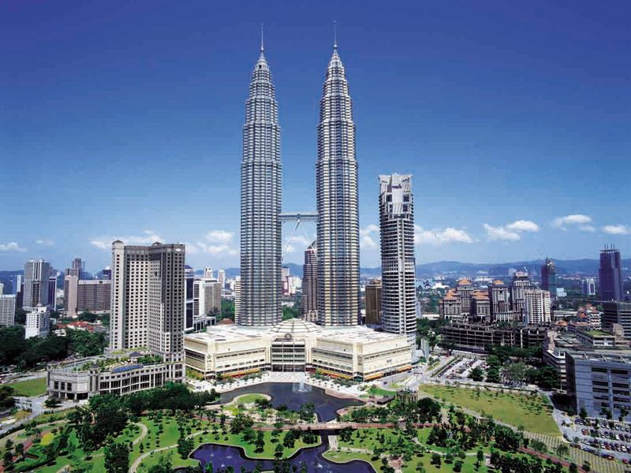
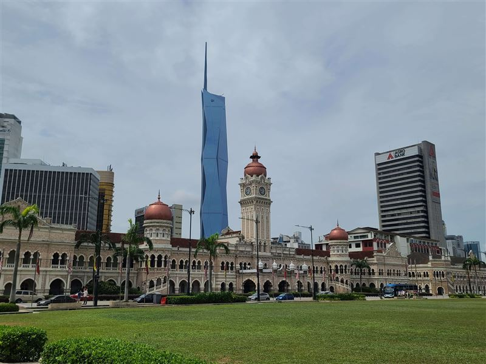
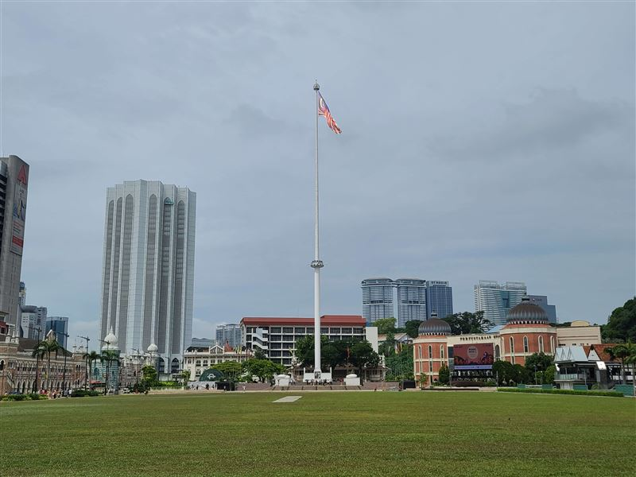
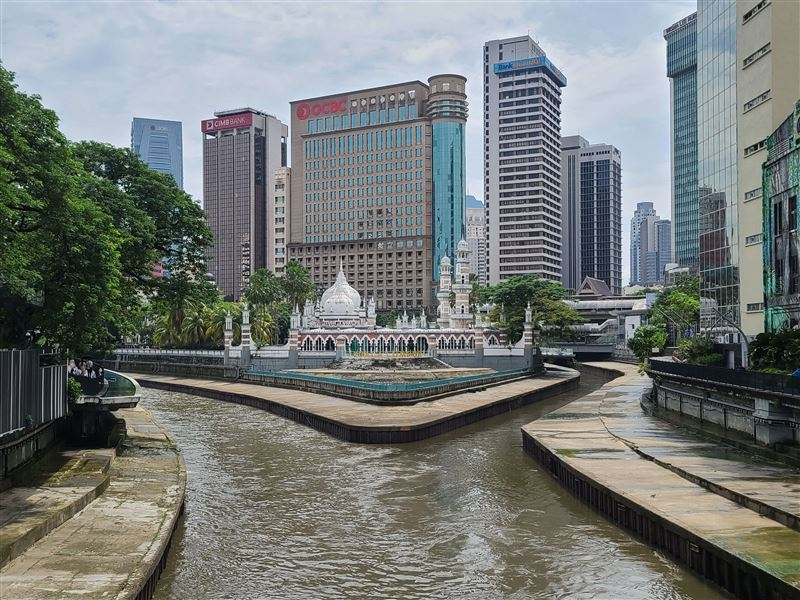

Explore Kuala Lumpur
A Brief History
Kuala Lumpur began in the 1850s at the meeting point of the Klang and Gombak rivers, where miners and traders served the Klang Valley tin fields. It became Selangor's capital in 1880, the capital of the Federated Malay States in 1896, and later Malaysia's national capital. Colonial institutions, mosques, rail links, and post-independence towers define the city today.
Attractions Map
Top Sights & Activities

Batu Caves
Batu Caves is a limestone hill complex north of central Kuala Lumpur. The site became a Tamil Hindu shrine in the late 19th century and is associated with Lord Murugan. Its main cave is reached by a long stairway beside the large Murugan statue added in 2006.

Petronas Twin Towers
The Petronas Twin Towers opened in 1998 and were designed by Cesar Pelli. At 452 metres, they were the world's tallest buildings until 2004. Their plan draws on Islamic geometric motifs, and the bridge and observation level became central landmarks in Kuala Lumpur's post-independence skyline.

Bangunan Sultan Abdul Samad
Completed in 1897, Bangunan Sultan Abdul Samad was designed by A. C. Norman with later revisions by R. A. J. Bidwell and A. B. Hubback. Its clock tower, copper domes, and Indo-Saracenic style made it a colonial administrative landmark on what is now Jalan Raja.

Merdeka Square
Merdeka Square, historically the Padang, was the civic field of colonial Kuala Lumpur. At midnight on 31 August 1957, the Union Jack was lowered here and the flag of independent Malaya was raised. The square remains tied to national ceremonies and public events.

River of Life
River of Life is an urban riverfront redevelopment around the confluence of the Klang and Gombak rivers. The project was launched in the 2010s to improve water quality, public space, and lighting in the historic core where Kuala Lumpur first took shape.